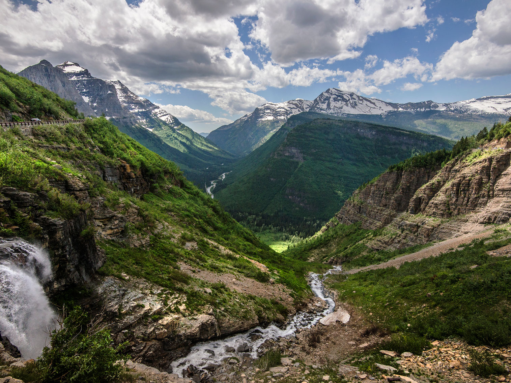

U.S. Territories Travel Guide
Collection of island and coastal regions characterized by diverse cultures, tropical and marine ecosystems, strategic history, and vibrant traditions shaped by indigenous heritage and global influence.
Top Locations


-400.jpg)


Places to See in U.S. Territories

Going to the Sun Road
Glacier National Park
American Samoa
Territory located in the South Pacific Ocean, consisting of five main islands and two coral atolls, known for its stunning natural beauty, including lush rainforests, pristine beaches, and vibrant coral reefs.

Matanuska-Susitna Valley
Guam
U.S. territory in the Western Pacific Ocean, known for its tropical beaches, rich Chamorro culture, and vibrant marine life.
Matanuska-Susitna Valley
Puerto Rico
Caribbean island and U.S. territory, offering a blend of rich culture, and stunning landscapes with diverse attractions, including pristine beaches, vibrant nightlife, and unique culinary experiences.

Shoshone Falls
U.S. Virgin Islands
Group of Caribbean islands and islets that are an unincorporated territory of the United States, with the main islands of Saint Thomas, Saint John, and Saint Croix, known for their beautiful beaches, crystal-clear waters, and vibrant culture
Overview
The United States Territories encompass a unique group of inhabited and uninhabited regions that reflect a wide spectrum of cultural identity, natural beauty, and historical significance. These areas include Puerto Rico, Guam, American Samoa, the U.S. Virgin Islands, and the Northern Mariana Islands, each offering a distinct blend of indigenous traditions and influences introduced through centuries of exploration, trade, and governance. From lush rainforests and coral reefs to volcanic peaks and coastal plains, their landscapes rival some of the most captivating environments in the world.
Each territory carries its own narrative shaped by resilience and adaptation. Indigenous cultures—such as the Chamorro in Guam and the Samoan people of American Samoa—continue to thrive alongside modern communities, preserving languages, customs, and ceremonial practices. Colonial histories, marked by Spanish, German, Japanese, Danish, and American presence, have left visible imprints on architecture, cuisine, and social systems, creating layered identities that fascinate both historians and visitors alike.
Nature plays a defining role across these regions, where biodiversity flourishes in relative isolation. Tropical forests shelter rare species, while surrounding waters teem with marine life including sea turtles, coral reefs, and migratory fish. Visitors often explore protected parks, marine sanctuaries, and cultural landmarks that highlight conservation efforts and the delicate balance between development and preservation. Outdoor experiences—from snorkeling and hiking to cultural festivals—offer immersive ways to engage with each territory’s environment and heritage.
Despite geographic separation, these territories share a connection through governance and economic ties while maintaining their own local identities and traditions. Festivals filled with music and dance, traditional crafts, and locally inspired cuisine provide insight into everyday life. For travelers, exploring these regions offers not just scenic beauty but an opportunity to experience communities where history, culture, and nature intersect in profoundly meaningful ways.
This article uses material from the Wikipedia articles and official tourism pages for the United States Territories, including Puerto Rico, Guam, American Samoa, the U.S. Virgin Islands, and the Northern Mariana Islands, which are released under the Creative Commons Attribution-Share-Alike License 3.0.